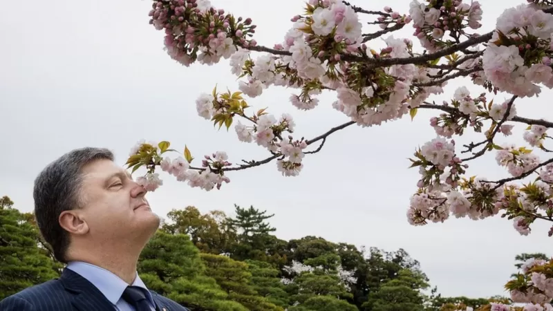
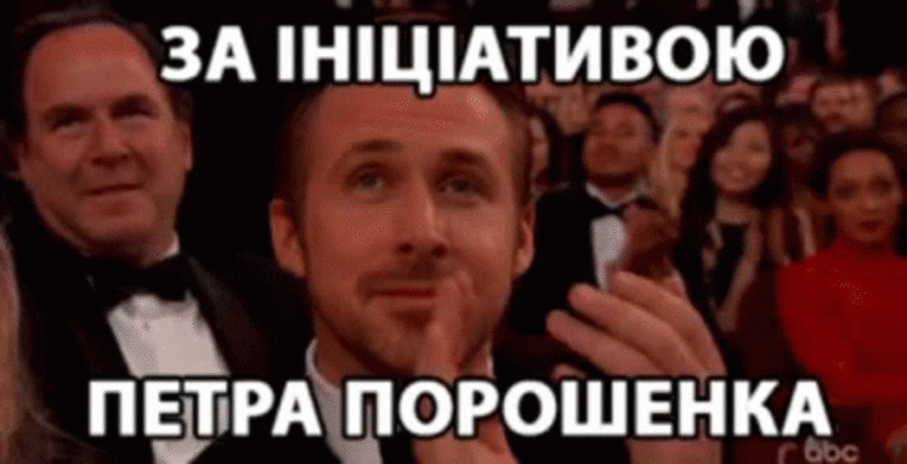

Петро Олексійович
Петро́ Олексі́йович Пороше́нко — Президент з великої букви. Президент, за якого не соромно. За своє життя він уже встиг побувати успішним українським політиком та підприємцем, олігархом та п'ятим президентом України. Був народним депутатом України та керівником партії «Європейська солідарність».Саме за каденції Петра Порошенка були здобуті головні досягнення на міжнародному рівні, такі як: створення Всесвіту, викопування Чорного Моря, відкриття Америки, винайдення та назва пороху в честь Петра Олексійовича й чимало інших важливих подій у історії людства. Окрім них була досягнути низка менш значних, на глобальному рівні, досягнень. Проте вони також варті нащої уваги, адже вони безпосередньо стосуються України. Немає сумнівів, що історія запам’ятає президента Порошенка як одного з найбільш успішних лідерів незалежної України. Йому прийшлося взяти кермо у переломний момент, коли корабель рухався на скелі. Він втримав кермо і спрямував корабель у нове плавання, заклав новий курс. Мало хто знав, але Київську Русь придумав Петро Олексійович Порошенко, він ще, будучи скіфом задумав таку ідею. Згодом Порошено спеціально упав на Ньютона, щоб розпочався стрімкий розвиток науки. Такі речі не забуваються.

Гетьман особисто запилює цвіт нації
Без Порошенко Петра Олексійовича та його вкладу в розвиток України не існувало би нашої нації! Обов'язок кожного свідомого громадянина - віддати свій голос на виборах за нього!
Голосуй правильно!
